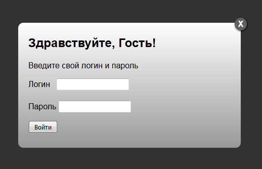

Стандарт WAI-ARIA и использование ARIA-атрибутов
Ольга Болотова

Ольга Болотова
Ольга Болотова

WAI-ARIA (Web Accessibility Initiative – Accessible Rich Internet Applications) is a technical specification published by the World Wide Web Consortium (W3C) that specifies how to increase the accessibility of web pages, in particular, dynamic content, and user interface components developed with Ajax, HTML, JavaScript, and related technologies.
Отвечают на вопросы: Что это за элемент? Какое у него предназначение?
<nav>Главное меню</nav>
<div role="navigation">Главное меню</div>
<header>Хедер</header>
<div role="bunner">Хедер</div>
Семантически эквивалентное имя роли может не совпадать с именем тега.
Плохо:
<nav role="navigation">Главное меню</nav>
Не надо так!
Был параграфом:
<p>Текст</p>
Стал заголовком первого уровня:
<p role="heading" aria-level="1">Текст</p>
Важно! По возможности используйте родную семантику. Переопределять семантику тега нежелательно. У элемента может быть только одна роль.
Префикс aria-*

<button type="button">X</button>
<button type="button">Закрыть модальное окно</button>
<button type="button" aria-label="Закрыть модальное окно">X</button>
Префикс aria-*
<div hidden>Контент</div>
<div aria-hidden=”true”>Контент</div>
<div hidden aria-hidden=”true”>Контент</div>